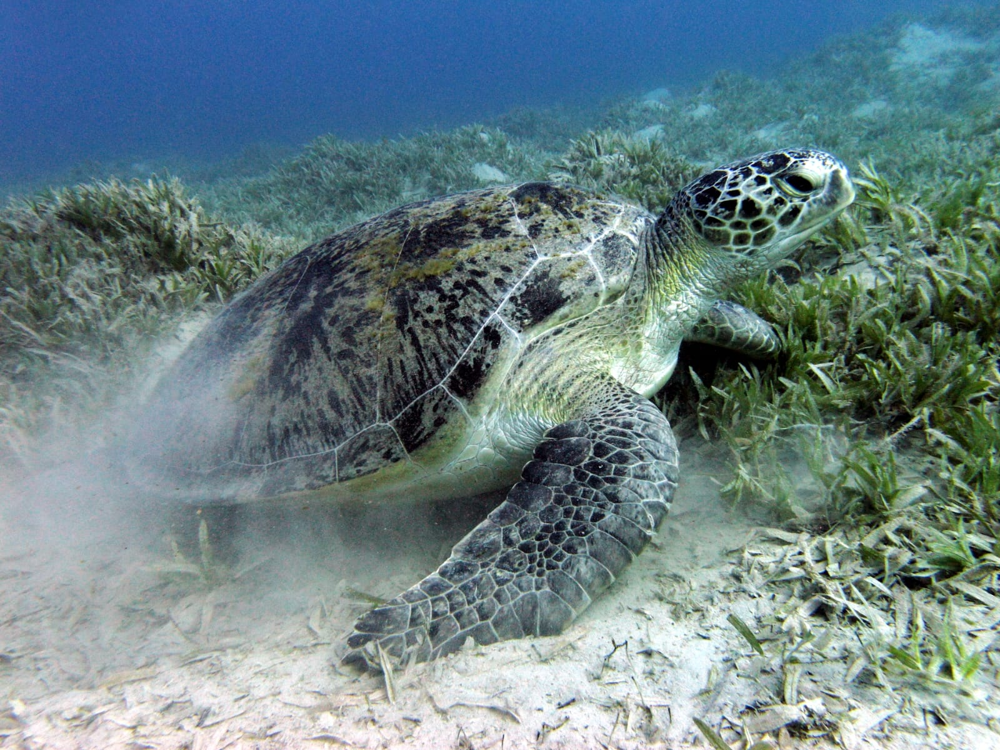
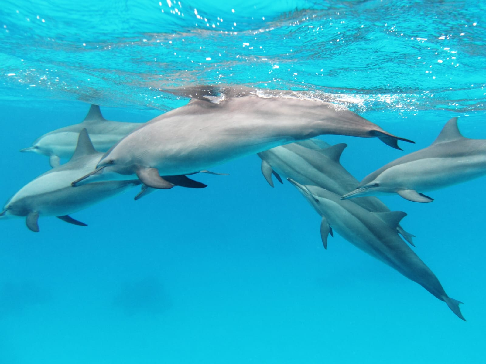
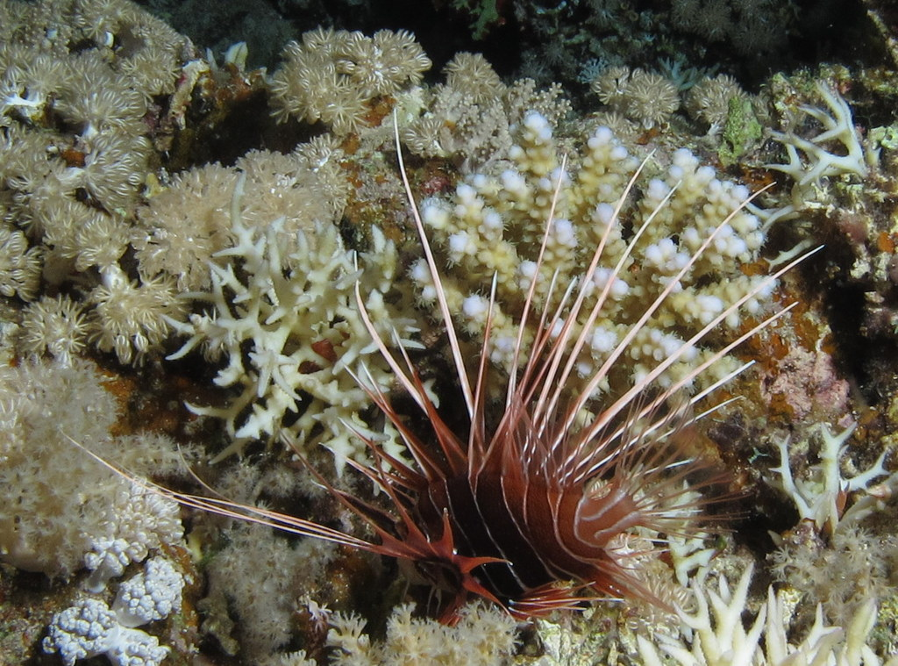

Discover the Marine Life
The Red Sea is home to a rich variety of marine life. Its warm and clear waters provide a perfect environment for many fascinating sea creatures.
From colorful fish and beautiful coral reefs to dolphins and sea turtles, the Red Sea is full of incredible life that deserves to be protected.
Coral Reefs
Coral reefs are living ecosystems and one of the greatest treasures of the Red Sea. Beneath its clear blue waters, they create a colorful underwater world that provides food, shelter, and habitats for many marine species.
The coral reefs of the Red Sea support a remarkable variety of marine life, including colorful fish, sea turtles, and many other organisms. They also play an important role in supporting biodiversity and maintaining the balance of the marine ecosystem.
A World Worth Protecting
Although coral reefs may look strong, they are delicate and can be damaged by pollution, careless human activities, and rising sea temperatures. Protecting them means protecting an entire underwater community and the future of marine life in the Red Sea.
Marine Animals
Beneath the clear waters of the Red Sea lives a remarkable variety of marine animals. From graceful sea turtles to intelligent dolphins and colorful fish, each species plays an important role in the underwater ecosystem.

Green Sea Turtle
Green sea turtles are graceful marine animals that can be found in the Red Sea. They are an important part of marine ecosystems and depend on healthy seas and coastal habitats to survive.

Dolphins
Dolphins are intelligent and social animals known for their playful behavior. The warm waters of the Red Sea provide an important habitat where visitors can observe these fascinating creatures.

Red Sea Fish
The Red Sea is home to a wide variety of colorful fish. They live among coral reefs and form an essential part of the marine food web and underwater ecosystem.
🐢 A Little Marine Advice
Take your time — even the turtles know there's no need to rush! 😄
Why Marine Life Matters
Marine life helps keep the ocean healthy and supports life on Earth. Every species has an important role in maintaining the balance of the ecosystem.
Learn how to protect marine life →